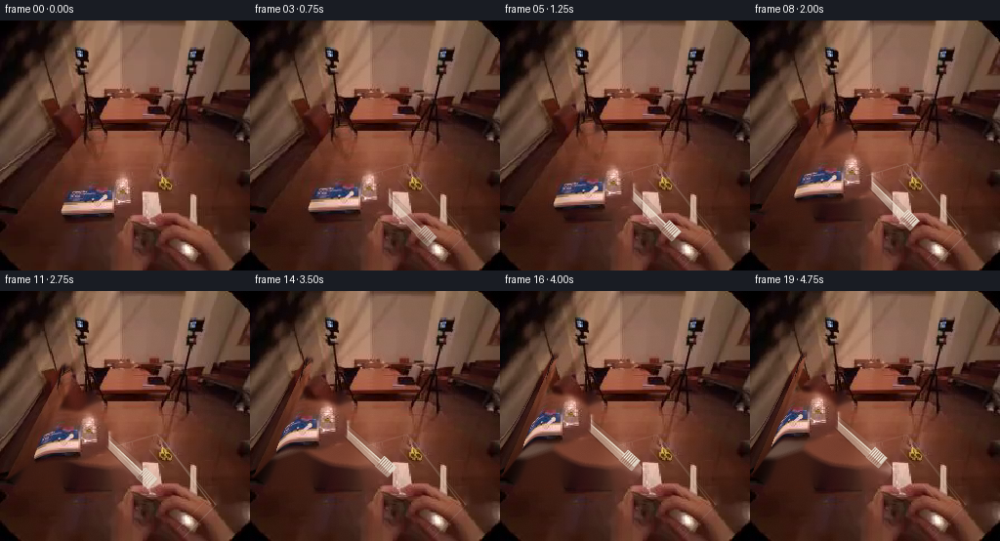
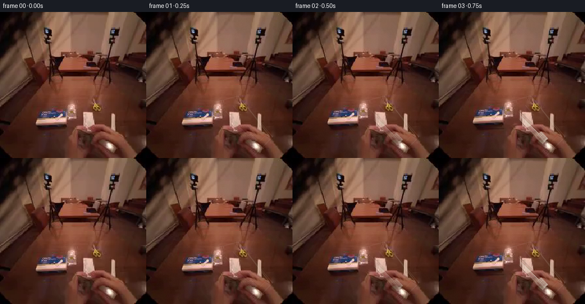
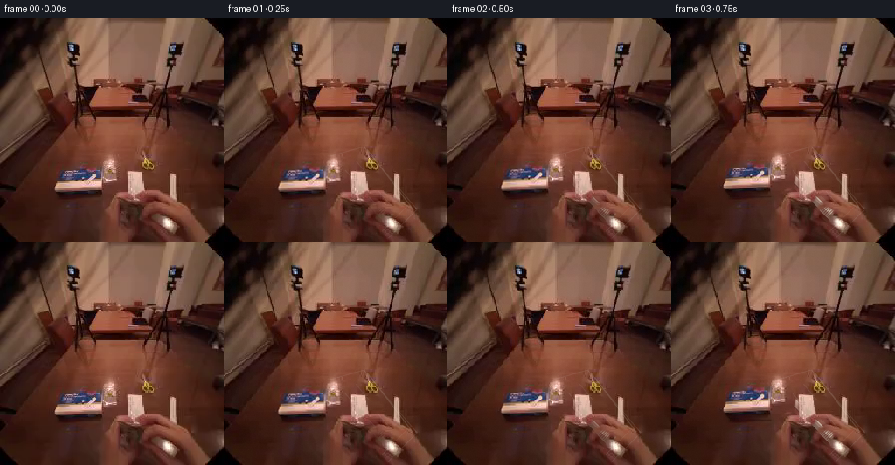

CODING AGENTS AS PIXEL WORLD MODELS
traex/GPT-5.6-Sol · common50_0026
点击播放 · 原生 RGB 像素
逐轮保存的候选
回放视频、检查图与代码变化。
每份候选均可单独播放。实际图片检查记录在下方工具轨迹中。
候选 01播放与检查图
点击播放 · 原生 RGB 像素


展开代码变化
--- 上一保存版本
+++ 本次保存版本
@@ -0,0 +1,205 @@
+from pathlib import Path
+import json
+import numpy as np
+import cv2
+from PIL import Image, ImageDraw, ImageFilter
+import artifact_io
+
+# Deterministic, image-derived animation. The scene is kept as the photographic
+# source; only the manipulating hand, tube, and changing plastic reflections are
+# layered/warped.
+ROOT = Path(__file__).resolve().parent
+SRC = np.asarray(Image.open(ROOT / "first_frame.png").convert("RGB"), dtype=np.uint8)
+H, W = SRC.shape[:2]
+
+
+def smoothstep(x):
+ x = np.clip(x, 0.0, 1.0)
+ return x * x * (3.0 - 2.0 * x)
+
+
+def rgba_over(base, rgba, strength=1.0):
+ """Alpha composite a uint8 RGBA layer over RGB."""
+ a = rgba[..., 3:4].astype(np.float32) * (strength / 255.0)
+ return np.clip(base.astype(np.float32) * (1.0 - a) +
+ rgba[..., :3].astype(np.float32) * a, 0, 255).astype(np.uint8)
+
+
+def highres_layer(scale=4):
+ return Image.new("RGBA", (W * scale, H * scale), (0, 0, 0, 0))
+
+
+def draw_tube(pull, visibility):
+ """Warm white, slightly tapered tube following the observed pack diagonal."""
+ S = 4
+ layer = highres_layer(S)
+ d = ImageDraw.Draw(layer, "RGBA")
+
+ # Pull follows the long axis of the transparent package, up and to the left.
+ dx = -56.0 * pull
+ dy = -52.0 * pull
+ # A tiny natural lift/turn near the end of the pull.
+ ang = np.deg2rad(-3.2 * smoothstep((pull - .35) / .65))
+ a0 = np.array([126.0, 166.0])
+ b0 = np.array([188.0, 228.0])
+ c = (a0 + b0) * .5
+ R = np.array([[np.cos(ang), -np.sin(ang)], [np.sin(ang), np.cos(ang)]])
+ a = (R @ (a0 - c)) + c + (dx, dy)
+ b = (R @ (b0 - c)) + c + (dx, dy)
+ v = b - a
+ L = float(np.linalg.norm(v))
+ u = v / L
+ n = np.array([-u[1], u[0]])
+
+ def P(q): return tuple(np.round(np.asarray(q) * S).astype(int))
+ def poly(points, fill): d.polygon([P(p) for p in points], fill=fill)
+
+ # Soft contact shadow makes the object sit within/above the clear blister.
+ sh = np.array([2.4, 2.8])
+ poly([a + n*6 + sh, b + n*7 + sh, b - n*7 + sh, a - n*6 + sh],
+ (32, 13, 9, int(62 * visibility)))
+
+ # Sealed crimp at the narrow end and tapered laminate body.
+ body_end = b - u * 13
+ poly([a+n*4.3, body_end+n*6.6, body_end-n*6.6, a-n*4.3],
+ (230, 217, 198, int(242 * visibility)))
+ # Warm shaded side, central diffuse highlight and a subdued far rim.
+ poly([a+n*4.3, body_end+n*6.6, body_end+n*2.0, a+n*1.2],
+ (248, 236, 217, int(110 * visibility)))
+ poly([a-n*1.3, body_end-n*2.0, body_end-n*6.6, a-n*4.3],
+ (163, 128, 112, int(92 * visibility)))
+ d.line([P(a+n*.3), P(body_end+n*.5)], fill=(255,248,229,int(115*visibility)), width=2*S)
+
+ # Small flattened seal at the upper end.
+ seal = a - u*4.0
+ poly([seal+n*4.2, a+n*4.3, a-n*4.3, seal-n*4.2],
+ (214, 198, 180, int(225*visibility)))
+ d.line([P(seal+n*3.0), P(seal-n*3.0)], fill=(143,108,96,int(90*visibility)), width=S)
+
+ # Ribbed screw cap at the lower end.
+ cap0 = body_end - u*1.0
+ cap1 = b + u*3.0
+ poly([cap0+n*7.1, cap1+n*7.0, cap1-n*7.0, cap0-n*7.1],
+ (224, 213, 196, int(247 * visibility)))
+ poly([cap0+n*7.1, cap1+n*7.0, cap1+n*2.1, cap0+n*2.1],
+ (252, 242, 223, int(105*visibility)))
+ for z in np.linspace(1.5, 13.0, 6):
+ q = cap0 + u*z
+ d.line([P(q-n*6.0), P(q+n*6.0)], fill=(135,111,101,int(70*visibility)), width=max(1,S//2))
+ d.line([P(cap1-n*6.2), P(cap1+n*6.2)], fill=(255,248,232,int(105*visibility)), width=S)
+
+ layer = layer.resize((W, H), Image.Resampling.LANCZOS)
+ # Very slight optical softness, matching the source image rather than vector art.
+ return np.asarray(layer, dtype=np.uint8)
+
+
+def draw_plastic(pull):
+ """Subtle changing glints on the stationary clear package."""
+ S = 4
+ layer = highres_layer(S)
+ d = ImageDraw.Draw(layer, "RGBA")
+ def P(xy): return tuple(np.round(np.asarray(xy)*S).astype(int))
+
+ # Observed diagonal blister footprint. Interior remains transparent.
+ q0=np.array([121.,158.]); q1=np.array([160.,147.]); q2=np.array([221.,219.]); q3=np.array([188.,252.])
+ bend = 2.2*np.sin(np.pi*pull)
+ q0 += (-bend, bend*.4); q1 += (bend*.2,-bend*.3)
+ alpha = int(26 + 24*np.sin(np.pi*pull)**2)
+ d.line([P(q0),P(q1),P(q2),P(q3)], fill=(238,226,213,alpha), width=S)
+ d.line([P(q1+(4,3)),P(q2-(5,1))], fill=(255,247,235,int(alpha*1.25)), width=max(S,5))
+ d.line([P(q3-(7,8)),P(q2-(7,8))], fill=(229,212,200,int(alpha*.8)), width=S)
+ # Short, broken specular reflections sell flexible transparent plastic.
+ shift = 3.0*pull
+ glints = [((151+shift,163-shift*.3),(166+shift,181-shift*.3)),
+ ((177,198),(192,215)), ((139,174),(146,182))]
+ for k,(a,b) in enumerate(glints):
+ aa=int((38+18*np.sin(pull*5.1+k)) * (0.4+0.6*pull))
+ d.line([P(a),P(b)], fill=(255,245,232,max(8,aa)), width=max(S,5))
+ layer = layer.resize((W,H), Image.Resampling.LANCZOS)
+ return np.asarray(layer,dtype=np.uint8)
+
+
+# Soft matte of the source hand that grips the tube. It includes the wrist to
+# avoid a detached "floating" hand and is warped progressively rather than cut
+# out as a hard rigid patch.
+hand_hard = np.zeros((H,W),np.uint8)
+hand_poly = np.array([
+ [0,151],[25,132],[55,111],[91,99],[106,109],[104,130],
+ [91,151],[119,157],[136,168],[140,185],[134,198],[119,205],
+ [80,204],[49,201],[15,201],[0,190]
+],np.int32)
+cv2.fillPoly(hand_hard,[hand_poly],255)
+# A small extension covers the fingers meeting the package mouth.
+cv2.ellipse(hand_hard,(126,177),(18,24),-38,0,360,255,-1)
+hand_alpha = cv2.GaussianBlur(hand_hard,(0,0),2.0).astype(np.float32)/255.0
+# Inpaint only the firmly covered interior to produce plausible dark tabletop
+# underneath portions exposed during the pull.
+inpaint_mask = cv2.erode(hand_hard,np.ones((5,5),np.uint8),iterations=1)
+background = cv2.inpaint(SRC, inpaint_mask, 7, cv2.INPAINT_TELEA)
+
+
+def warped_hand(pull):
+ """Return RGB and alpha for a connected non-rigid upper-left pull."""
+ yy,xx=np.mgrid[0:H,0:W].astype(np.float32)
+ # Finger area moves fully; wrist at the left image edge stretches naturally.
+ weight=np.clip((xx + .34*yy - 43.0)/118.0,0,1)
+ weight=smoothstep(weight)
+ dx=-56.0*pull
+ dy=-52.0*pull
+ # Invert q=p+d*w(p) iteratively for a smooth dense warp.
+ px=xx.copy(); py=yy.copy()
+ for _ in range(5):
+ wp=np.clip((px+.34*py-43.0)/118.0,0,1)
+ wp=smoothstep(wp)
+ px=xx-dx*wp; py=yy-dy*wp
+ rgb=cv2.remap(SRC,px,py,cv2.INTER_CUBIC,borderMode=cv2.BORDER_REFLECT_101)
+ al=cv2.remap(hand_alpha,px,py,cv2.INTER_LINEAR,borderMode=cv2.BORDER_CONSTANT)
+ # Restrict any reflected matte to a reasonable expanded region.
+ al=np.clip(al,0,1)
+ return rgb,al[...,None]
+
+
+def generate_frames():
+ frames=[]
+ for i in range(20):
+ if i == 0:
+ frames.append(SRC.copy())
+ continue
+ t=i/19.0
+ # Ease in, decisive middle pull, and a tiny hand-settling rebound.
+ pull=smoothstep(t)
+ if t>0.78:
+ pull += .018*np.sin((t-.78)/.22*np.pi)
+ pull=float(np.clip(pull,0,1))
+
+ # Underlayer starts as inpainted scene. At the earliest frames blend a
+ # little source back, making the onset especially continuous.
+ onset=smoothstep(t/.16)
+ base=(background.astype(np.float32)*onset + SRC.astype(np.float32)*(1-onset)).astype(np.uint8)
+
+ # The tube translates first; source hand is then composited over it so
+ # the grip and fingers retain true photographic skin texture.
+ vis=float(smoothstep(t/.24))
+ base=rgba_over(base,draw_tube(pull,vis))
+ hand,ha=warped_hand(pull)
+ base=np.clip(base.astype(np.float32)*(1-ha)+hand.astype(np.float32)*ha,0,255).astype(np.uint8)
+
+ # Plastic remains in the lower-right hand and its highlights flex as the
+ # tube clears the opening.
+ base=rgba_over(base,draw_plastic(pull))
+
+ # Keep changing highlights from looking sterile: modest source-colored
+ # grain, only where the synthetic tube lies, deterministic per frame.
+ rng=np.random.default_rng(4300+i)
+ noise=rng.normal(0,0.55,(H,W,1)).astype(np.float32)
+ # practically imperceptible sensor grain over the whole frame
+ base=np.clip(base.astype(np.float32)+noise,0,255).astype(np.uint8)
+ frames.append(base)
+ return np.stack(frames).astype(np.uint8)
+
+
+if __name__ == "__main__":
+ frames=generate_frames()
+ assert frames.shape==(20,256,256,3) and frames.dtype==np.uint8
+ assert np.array_equal(frames[0],SRC)
+ artifact_io.save(frames,ROOT)
候选 02播放与检查图
点击播放 · 原生 RGB 像素

展开代码变化
--- 上一保存版本
+++ 本次保存版本
@@ -135,7 +135,25 @@
# Inpaint only the firmly covered interior to produce plausible dark tabletop
# underneath portions exposed during the pull.
inpaint_mask = cv2.erode(hand_hard,np.ones((5,5),np.uint8),iterations=1)
+# Also clear the original tube footprint. Without this narrow capsule the
+# pulled object would leave a second, stationary copy visible in its tray.
+tube_old = np.zeros((H,W),np.uint8)
+cv2.line(tube_old,(126,166),(190,230),255,18,cv2.LINE_AA)
+cv2.ellipse(tube_old,(190,230),(10,11),45,0,360,255,-1)
+inpaint_mask = cv2.bitwise_or(inpaint_mask, tube_old)
background = cv2.inpaint(SRC, inpaint_mask, 7, cv2.INPAINT_TELEA)
+
+# Warm, saturated bright pixels at the right of the pack are the supporting
+# hand. Save them as a foreground occluder: the tube passes beneath these
+# fingers both before and during extraction.
+rgbf=SRC.astype(np.float32)
+skin=((rgbf[...,0]-rgbf[...,2]>35) & (rgbf[...,0]-rgbf[...,1]>22) &
+ (rgbf.mean(2)>78)).astype(np.uint8)*255
+roi=np.zeros((H,W),np.uint8)
+cv2.fillPoly(roi,[np.array([[138,163],[184,164],[217,204],[211,252],[176,255],[141,213]],np.int32)],255)
+right_hand=cv2.bitwise_and(skin,roi)
+right_hand=cv2.morphologyEx(right_hand,cv2.MORPH_CLOSE,np.ones((5,5),np.uint8))
+right_alpha=cv2.GaussianBlur(right_hand,(0,0),1.15).astype(np.float32)/255.0
def warped_hand(pull):
@@ -184,6 +202,10 @@
hand,ha=warped_hand(pull)
base=np.clip(base.astype(np.float32)*(1-ha)+hand.astype(np.float32)*ha,0,255).astype(np.uint8)
+ # Re-establish the stationary supporting fingertips over the tube.
+ ra=right_alpha[...,None]
+ base=np.clip(base.astype(np.float32)*(1-ra)+SRC.astype(np.float32)*ra,0,255).astype(np.uint8)
+
# Plastic remains in the lower-right hand and its highlights flex as the
# tube clears the opening.
base=rgba_over(base,draw_plastic(pull))
可观测工具轨迹
实际执行的命令与返回图片。
命令 1exit 0
/bin/bash -lc "cat GENERATION_RULES.md && printf '\\n---PROMPT---\\n' && cat prompt.txt"
命令 2exit 127
/bin/bash -lc "find . -maxdepth 2 -type f -printf '%p\\n' | sort && file first_frame.png"
命令 3exit 0
/bin/bash -lc "cat task_spec.json && sed -n '1,240p' artifact_io.py"
命令 4exit 0
/bin/bash -lc "python - <<'PY'
from PIL import Image
import numpy as np
im=np.array(Image.open('first_frame.png').convert('RGB'))
print(im.shape, im.dtype, im.min(), im.max())
print('mean',im.mean((0,1)),'std',im.std((0,1)))
# quantiles channels/luma/saturation
lum=im.mean(2); mx=im.max(2); mn=im.min(2); sat=mx-mn
for name,x in [('lum',lum),('sat',sat),('R',im[:,:,0]),('G',im[:,:,1]),('B',im[:,:,2])]: print(name,np.percentile(x,[0,1,5,10,25,50,75,90,95,99,100]))
PY"命令 5exit 2
/bin/bash -lc "cat > /tmp/analyze.py <<'PY'
from PIL import Image
import numpy as np
from scipy.cluster.vq import kmeans2
from scipy import ndimage as ndi
im=np.array(Image.open('first_frame.png').convert('RGB'))
# average 8x8 tiles, cluster into 12 colors
small=im.reshape(32,8,32,8,3).mean((1,3))
cen,lab=kmeans2(small.reshape(-1,3),12,minit='++',seed=3,iter=40)
# reorder by luma
order=np.argsort(cen.mean(1)); rem=np.zeros(12,int); rem[order]=np.arange(12); lab=rem[lab].reshape(32,32); cen=cen[order]
print('centers sorted RGB:');
for i,c in enumerate(cen):print(i,np.round(c,1), 'lum',round(c.mean(),1))
chars='0123456789AB'
for row in lab: print(''.join(chars[x] for x in row))
print('\\nbright masks/components')
for threshold in [130,150,170,190,210,230]:
m=im.mean(2)>threshold
l,n=ndi.label(m)
comps=[]
for j in range(1,n+1):
ys,xs=np.where(l==j); a=len(xs)
if a>=10: comps.append((a,(xs.min(),ys.min(),xs.max()+1,ys.max()+1),tuple(np.round(im[ys,xs].mean(0),1))))
print('\\nth',threshold,'pixels',m.sum(),'largest',sorted(comps,reverse=True)[:12])
# near whites low saturation and bright
lum=im.mean(2); sat=im.max(2)-im.min(2)
for L,S in [(120,35),(140,45),(160,50),(180,55),(200,60)]:
m=(lum>L)&(sat<S)
l,n=ndi.label(m)
comps=[]
for j in range(1,n+1):
ys,xs=np.where(l==j); a=len(xs)
if a>=10: comps.append((a,(xs.min(),ys.min(),xs.max()+1,ys.max()+1),tuple(np.round(im[ys,xs].mean(0),1))))
print('\\nneutral',L,S,'pixels',m.sum(),sorted(comps,reverse=True)[:12])
PY
python /tmp/analyze.py"命令 6exit 0
/bin/bash -lc "cat > .tmp/analyze.py <<'PY'
from PIL import Image
import numpy as np
from scipy.cluster.vq import kmeans2
from scipy import ndimage as ndi
im=np.array(Image.open('first_frame.png').convert('RGB'))
small=im.reshape(32,8,32,8,3).mean((1,3))
cen,lab=kmeans2(small.reshape(-1,3),12,minit='++',seed=3,iter=40)
order=np.argsort(cen.mean(1)); rem=np.zeros(12,int); rem[order]=np.arange(12); lab=rem[lab].reshape(32,32); cen=cen[order]
print('centers sorted RGB:')
for i,c in enumerate(cen):print(i,np.round(c,1), 'lum',round(c.mean(),1))
chars='0123456789AB'
for row in lab: print(''.join(chars[x] for x in row))
print('\\nbright masks/components')
for threshold in [130,150,170,190,210,230]:
m=im.mean(2)>threshold
l,n=ndi.label(m)
comps=[]
for j in range(1,n+1):
ys,xs=np.where(l==j); a=len(xs)
if a>=10: comps.append((a,(xs.min(),ys.min(),xs.max()+1,ys.max()+1),tuple(np.round(im[ys,xs].mean(0),1))))
print('\\nth',threshold,'pixels',m.sum(),'largest',sorted(comps,reverse=True)[:12])
lum=im.mean(2); sat=im.max(2)-im.min(2)
for L,S in [(120,35),(140,45),(160,50),(180,55),(200,60)]:
m=(lum>L)&(sat<S)
l,n=ndi.label(m)
comps=[]
for j in range(1,n+1):
ys,xs=np.where(l==j); a=len(xs)
if a>=10: comps.append((a,(xs.min(),ys.min(),xs.max()+1,ys.max()+1),tuple(np.round(im[ys,xs].mean(0),1))))
print('\\nneutral',L,S,'pixels',m.sum(),sorted(comps,reverse=True)[:12])
PY
python .tmp/analyze.py"命令 7exit 0
/bin/bash -lc "cat > .tmp/geom.py <<'PY'
import numpy as np
from PIL import Image
from scipy import ndimage as ndi
im=np.array(Image.open('first_frame.png').convert('RGB')).astype(float)
g=im.mean(2)
# print grayscale 64 x 64 (average 4x4), inverted chars
sm=g.reshape(64,4,64,4).mean((1,3))
chars=' .:-=+*#%@'
lo,hi=np.percentile(sm,[2,98]); q=np.clip((sm-lo)/(hi-lo),0,.999)
print('GRAYSCALE')
for r in q:print(''.join(chars[int(x*len(chars))] for x in r))
# sobel edge 64
sx=ndi.sobel(g,1); sy=ndi.sobel(g,0); mag=np.hypot(sx,sy)
em=mag.reshape(64,4,64,4).mean((1,3)); lo,hi=np.percentile(em,[40,98]);q=np.clip((em-lo)/(hi-lo),0,.999)
print('EDGES')
for r in q:print(''.join(chars[int(x*len(chars))] for x in r))
# Hough via skimage
try:
from skimage.transform import probabilistic_hough_line
edges=mag>np.percentile(mag,92)
lines=probabilistic_hough_line(edges, threshold=15,line_length=20,line_gap=4,seed=2)
lines=sorted(lines,key=lambda z:-np.hypot(z[0][0]-z[1][0],z[0][1]-z[1][1]))
print('LINES')
for a,b in lines[:40]: print(a,b,'len',round(np.hypot(a[0]-b[0],a[1]-b[1]),1),'angle',round(np.degrees(np.arctan2(b[1]-a[1],b[0]-a[0])),1))
except Exception as e:print(e)
# colors at 16px grid
print('GRID COLORS each 16 center RGB')
for y in range(8,256,16):
print(' '.join('%02x%02x%02x'%tuple(im[y,x].astype(int)) for x in range(8,256,16)))
PY
python .tmp/geom.py"命令 8exit 0
/bin/bash -lc "python - <<'PY'
try:
import cv2; print('cv2',cv2.__version__)
except Exception as e: print(e)
PY"命令 9exit 0
/bin/bash -lc "python - <<'PY'
import cv2,numpy as np
from PIL import Image
im=cv2.imread('first_frame.png'); gray=cv2.cvtColor(im,cv2.COLOR_BGR2GRAY)
for p1,p2 in [(30,80),(50,120),(70,150)]:
e=cv2.Canny(gray,p1,p2)
ls=cv2.HoughLinesP(e,1,np.pi/180,threshold=20,minLineLength=20,maxLineGap=7)
print('\\n',p1,p2)
if ls is not None:
vals=[]
for q in ls[:,0]:
x1,y1,x2,y2=q; le=np.hypot(x2-x1,y2-y1); ang=np.degrees(np.arctan2(y2-y1,x2-x1)); vals.append((le,ang,tuple(q)))
for z in sorted(vals,reverse=True)[:60]:print(round(z[0],1),round(z[1],1),z[2])
PY"命令 10exit 0
/bin/bash -lc "python - <<'PY'
from PIL import Image
import numpy as np
im=np.array(Image.open('first_frame.png').convert('RGB'))
for y in range(70,125,3):
print(y, ['%3d/%3d/%3d'%tuple(im[y,x]) for x in range(60,226,10)])
PY"命令 11exit 0
/bin/bash -lc "cat > .tmp/bottom.py <<'PY'
from PIL import Image
import numpy as np
from scipy.cluster.vq import kmeans2
im=np.array(Image.open('first_frame.png').convert('RGB'))
for name,(x0,y0,x1,y1),step,k in [('bottom',(40,145,225,255),3,10),('middle',(40,65,230,150),3,10),('all',(0,0,256,256),4,14)]:
a=im[y0:y1,x0:x1]
hh=(a.shape[0]//step)*step; ww=(a.shape[1]//step)*step
sm=a[:hh,:ww].reshape(hh//step,step,ww//step,step,3).mean((1,3))
cen,lab=kmeans2(sm.reshape(-1,3),k,minit='++',seed=7,iter=100)
order=np.argsort(cen.mean(1)); rem=np.zeros(k,int);rem[order]=np.arange(k); lab=rem[lab].reshape(sm.shape[:2]);cen=cen[order]
print('\\n',name,'bbox',x0,y0,x1,y1,'step',step)
for i,c in enumerate(cen):print('0123456789ABCD'[i],np.round(c).astype(int),round(c.mean()))
for row in lab:print(''.join('0123456789ABCD'[i] for i in row))
PY
python .tmp/bottom.py"命令 12exit 0
/bin/bash -lc "python - <<'PY'
from PIL import Image
import numpy as np
from scipy import ndimage as ndi
im=np.array(Image.open('first_frame.png').convert('RGB')); lum=im.mean(2)
for th in [75,85,95,105,115,125]:
m=lum>th;l,n=ndi.label(m)
cs=[]
for i in range(1,n+1):
ys,xs=np.where(l==i);a=len(xs)
if a>50:cs.append((a,(xs.min(),ys.min(),xs.max()+1,ys.max()+1),np.round([xs.mean(),ys.mean()],1)))
print(th,sorted(cs,reverse=True)[:20])
PY"命令 13exit 0
/bin/bash -lc "cat > generate.py <<'PY'
from pathlib import Path
import json
import numpy as np
import cv2
from PIL import Image, ImageDraw, ImageFilter
import artifact_io
# Deterministic, image-derived animation. The scene is kept as the photographic
# source; only the manipulating hand, tube, and changing plastic reflections are
# layered/warped.
ROOT = Path(__file__).resolve().parent
SRC = np.asarray(Image.open(ROOT / \"first_frame.png\").convert(\"RGB\"), dtype=np.uint8)
H, W = SRC.shape[:2]
def smoothstep(x):
x = np.clip(x, 0.0, 1.0)
return x * x * (3.0 - 2.0 * x)
def rgba_over(base, rgba, strength=1.0):
\"\"\"Alpha composite a uint8 RGBA layer over RGB.\"\"\"
a = rgba[..., 3:4].astype(np.float32) * (strength / 255.0)
return np.clip(base.astype(np.float32) * (1.0 - a) +
rgba[..., :3].astype(np.float32) * a, 0, 255).astype(np.uint8)
def highres_layer(scale=4):
return Image.new(\"RGBA\", (W * scale, H * scale), (0, 0, 0, 0))
def draw_tube(pull, visibility):
\"\"\"Warm white, slightly tapered tube following the observed pack diagonal.\"\"\"
S = 4
layer = highres_layer(S)
d = ImageDraw.Draw(layer, \"RGBA\")
# Pull follows the long axis of the transparent package, up and to the left.
dx = -56.0 * pull
dy = -52.0 * pull
# A tiny natural lift/turn near the end of the pull.
ang = np.deg2rad(-3.2 * smoothstep((pull - .35) / .65))
a0 = np.array([126.0, 166.0])
b0 = np.array([188.0, 228.0])
c = (a0 + b0) * .5
R = np.array([[np.cos(ang), -np.sin(ang)], [np.sin(ang), np.cos(ang)]])
a = (R @ (a0 - c)) + c + (dx, dy)
b = (R @ (b0 - c)) + c + (dx, dy)
v = b - a
L = float(np.linalg.norm(v))
u = v / L
n = np.array([-u[1], u[0]])
def P(q): return tuple(np.round(np.asarray(q) * S).astype(int))
def poly(points, fill): d.polygon([P(p) for p in points], fill=fill)
# Soft contact shadow makes the object sit within/above the clear blister.
sh = np.array([2.4, 2.8])
poly([a + n*6 + sh, b + n*7 + sh, b - n*7 + sh, a - n*6 + sh],
(32, 13, 9, int(62 * visibility)))
# Sealed crimp at the narrow end and tapered laminate body.
body_end = b - u * 13
poly([a+n*4.3, body_end+n*6.6, body_end-n*6.6, a-n*4.3],
(230, 217, 198, int(242 * visibility)))
# Warm shaded side, central diffuse highlight and a subdued far rim.
poly([a+n*4.3, body_end+n*6.6, body_end+n*2.0, a+n*1.2],
(248, 236, 217, int(110 * visibility)))
poly([a-n*1.3, body_end-n*2.0, body_end-n*6.6, a-n*4.3],
(163, 128, 112, int(92 * visibility)))
d.line([P(a+n*.3), P(body_end+n*.5)], fill=(255,248,229,int(115*visibility)), width=2*S)
# Small flattened seal at the upper end.
seal = a - u*4.0
poly([seal+n*4.2, a+n*4.3, a-n*4.3, seal-n*4.2],
(214, 198, 180, int(225*visibility)))
d.line([P(seal+n*3.0), P(seal-n*3.0)], fill=(143,108,96,int(90*visibility)), width=S)
# Ribbed screw cap at the lower end.
cap0 = body_end - u*1.0
cap1 = b + u*3.0
poly([cap0+n*7.1, cap1+n*7.0, cap1-n*7.0, cap0-n*7.1],
(224, 213, 196, int(247 * visibility)))
poly([cap0+n*7.1, cap1+n*7.0, cap1+n*2.1, cap0+n*2.1],
(252, 242, 223, int(105*visibility)))
for z in np.linspace(1.5, 13.0, 6):
q = cap0 + u*z
d.line([P(q-n*6.0), P(q+n*6.0)], fill=(135,111,101,int(70*visibility)), width=max(1,S//2))
d.line([P(cap1-n*6.2), P(cap1+n*6.2)], fill=(255,248,232,int(105*visibility)), width=S)
layer = layer.resize((W, H), Image.Resampling.LANCZOS)
# Very slight optical softness, matching the source image rather than vector art.
return np.asarray(layer, dtype=np.uint8)
def draw_plastic(pull):
\"\"\"Subtle changing glints on the stationary clear package.\"\"\"
S = 4
layer = highres_layer(S)
d = ImageDraw.Draw(layer, \"RGBA\")
def P(xy): return tuple(np.round(np.asarray(xy)*S).astype(int))
# Observed diagonal blister footprint. Interior remains transparent.
q0=np.array([121.,158.]); q1=np.array([160.,147.]); q2=np.array([221.,219.]); q3=np.array([188.,252.])
bend = 2.2*np.sin(np.pi*pull)
q0 += (-bend, bend*.4); q1 += (bend*.2,-bend*.3)
alpha = int(26 + 24*np.sin(np.pi*pull)**2)
d.line([P(q0),P(q1),P(q2),P(q3)], fill=(238,226,213,alpha), width=S)
d.line([P(q1+(4,3)),P(q2-(5,1))], fill=(255,247,235,int(alpha*1.25)), width=max(S,5))
d.line([P(q3-(7,8)),P(q2-(7,8))], fill=(229,212,200,int(alpha*.8)), width=S)
# Short, broken specular reflections sell flexible transparent plastic.
shift = 3.0*pull
glints = [((151+shift,163-shift*.3),(166+shift,181-shift*.3)),
((177,198),(192,215)), ((139,174),(146,182))]
for k,(a,b) in enumerate(glints):
aa=int((38+18*np.sin(pull*5.1+k)) * (0.4+0.6*pull))
d.line([P(a),P(b)], fill=(255,245,232,max(8,aa)), width=max(S,5))
layer = layer.resize((W,H), Image.Resampling.LANCZOS)
return np.asarray(layer,dtype=np.uint8)
# Soft matte of the source hand that grips the tube. It includes the wrist to
# avoid a detached \"floating\" hand and is warped progressively rather than cut
# out as a hard rigid patch.
hand_hard = np.zeros((H,W),np.uint8)
hand_poly = np.array([
[0,151],[25,132],[55,111],[91,99],[106,109],[104,130],
[91,151],[119,157],[136,168],[140,185],[134,198],[119,205],
[80,204],[49,201],[15,201],[0,190]
],np.int32)
cv2.fillPoly(hand_hard,[hand_poly],255)
# A small extension covers the fingers meeting the package mouth.
cv2.ellipse(hand_hard,(126,177),(18,24),-38,0,360,255,-1)
hand_alpha = cv2.GaussianBlur(hand_hard,(0,0),2.0).astype(np.float32)/255.0
# Inpaint only the firmly covered interior to produce plausible dark tabletop
# underneath portions exposed during the pull.
inpaint_mask = cv2.erode(hand_hard,np.ones((5,5),np.uint8),iterations=1)
background = cv2.inpaint(SRC, inpaint_mask, 7, cv2.INPAINT_TELEA)
def warped_hand(pull):
\"\"\"Return RGB and alpha for a connected non-rigid upper-left pull.\"\"\"
yy,xx=np.mgrid[0:H,0:W].astype(np.float32)
# Finger area moves fully; wrist at the left image edge stretches naturally.
weight=np.clip((xx + .34*yy - 43.0)/118.0,0,1)
weight=smoothstep(weight)
dx=-56.0*pull
dy=-52.0*pull
# Invert q=p+d*w(p) iteratively for a smooth dense warp.
px=xx.copy(); py=yy.copy()
for _ in range(5):
wp=np.clip((px+.34*py-43.0)/118.0,0,1)
wp=smoothstep(wp)
px=xx-dx*wp; py=yy-dy*wp
rgb=cv2.remap(SRC,px,py,cv2.INTER_CUBIC,borderMode=cv2.BORDER_REFLECT_101)
al=cv2.remap(hand_alpha,px,py,cv2.INTER_LINEAR,borderMode=cv2.BORDER_CONSTANT)
# Restrict any reflected matte to a reasonable expanded region.
al=np.clip(al,0,1)
return rgb,al[...,None]
def generate_frames():
frames=[]
for i in range(20):
if i == 0:
frames.append(SRC.copy())
continue
t=i/19.0
# Ease in, decisive middle pull, and a tiny hand-settling rebound.
pull=smoothstep(t)
if t>0.78:
pull += .018*np.sin((t-.78)/.22*np.pi)
pull=float(np.clip(pull,0,1))
# Underlayer starts as inpainted scene. At the earliest frames blend a
# little source back, making the onset especially continuous.
onset=smoothstep(t/.16)
base=(background.astype(np.float32)*onset + SRC.astype(np.float32)*(1-onset)).astype(np.uint8)
# The tube translates first; source hand is then composited over it so
# the grip and fingers retain true photographic skin texture.
vis=float(smoothstep(t/.24))
base=rgba_over(base,draw_tube(pull,vis))
hand,ha=warped_hand(pull)
base=np.clip(base.astype(np.float32)*(1-ha)+hand.astype(np.float32)*ha,0,255).astype(np.uint8)
# Plastic remains in the lower-right hand and its highlights flex as the
# tube clears the opening.
base=rgba_over(base,draw_plastic(pull))
# Keep changing highlights from looking sterile: modest source-colored
# grain, only where the synthetic tube lies, deterministic per frame.
rng=np.random.default_rng(4300+i)
noise=rng.normal(0,0.55,(H,W,1)).astype(np.float32)
# practically imperceptible sensor grain over the whole frame
base=np.clip(base.astype(np.float32)+noise,0,255).astype(np.uint8)
frames.append(base)
return np.stack(frames).astype(np.uint8)
if __name__ == \"__main__\":
frames=generate_frames()
assert frames.shape==(20,256,256,3) and frames.dtype==np.uint8
assert np.array_equal(frames[0],SRC)
artifact_io.save(frames,ROOT)
PY
python generate.py
python - <<'PY'
import numpy as np
from PIL import Image
p=np.load('pixels.npz')['pixels']
frames=np.stack([np.array(Image.open(f'frames/{i:02d}.png')) for i in range(20)])
src=np.array(Image.open('first_frame.png').convert('RGB'))
print('shape',frames.shape,frames.dtype,'frame0 exact',np.array_equal(frames[0],src))
for i in range(20):
d=np.abs(frames[i].astype(int)-src.astype(int));
if i in [0,1,2,3,5,8,11,14,17,19]: print(i,'MAD',round(d.mean(),2),'changed',round((d.max(2)>3).mean(),3),'range',frames[i].min(),frames[i].max())
print('adjacent MAD:',[round(np.abs(frames[i].astype(int)-frames[i-1].astype(int)).mean(),2) for i in range(1,20)])
PY"命令 14exit 0
/bin/bash -lc "python generate.py && python - <<'PY'
import numpy as np
from PIL import Image
F=np.stack([np.array(Image.open(f'frames/{i:02d}.png')) for i in range(20)])
S=np.array(Image.open('first_frame.png').convert('RGB'))
print(F.shape,F.dtype,'exact=',np.array_equal(F[0],S))
print('temporal max changed fraction',max(((F[1:].astype(int)-F[:-1].astype(int))**2).sum(3).astype(bool).mean((1,2))))
print('files ok')
PY
ls -lh pixels.npz inspection.png transition_check.png index.html generate.py"保存候选 2 份；完成命令 14 次；可验证图片返回 0 张。原始 API 响应与完整日志保留在本地。